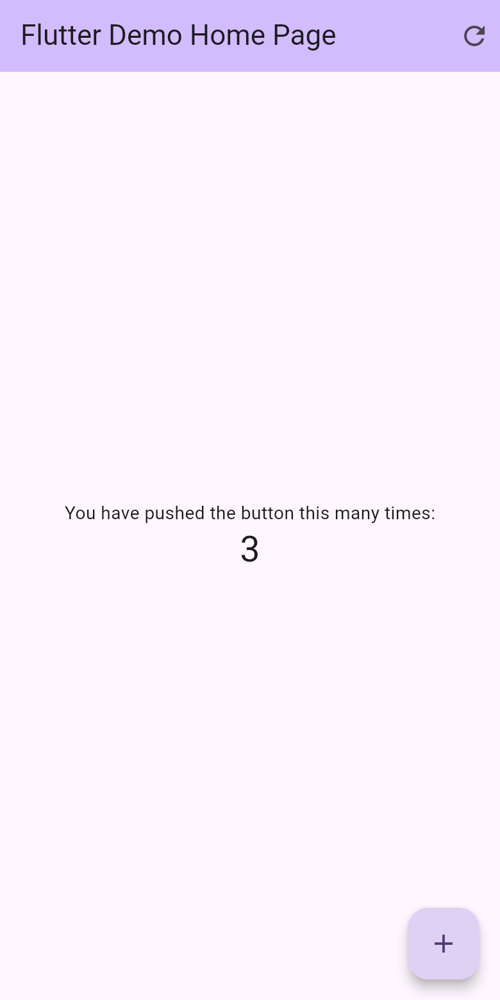

الفصل 1
تجهيز Flutter
في هذا الفصل ستتعلم أن
- تشرح ما هو Flutter، وكيف يصير كود واحد تطبيقاً لأندرويد وتطبيقاً لـ iPhone
- تثبّت Flutter والأدوات المحيطة به، وتقرأ ما يقوله لك
flutter doctor - تنشئ مشروعاً وتعرف الغرض من كل مجلد فيه
- تشغّل تطبيقاً، وتغيّره وهو يعمل بالتحديث الفوري
- تفحص عملك كما يفعل المحترفون: الاختبارات والمحلل والمنسّق
في آخر هذا الفصل سيكون لديك تطبيق حقيقي يعمل على جوال، أو على محاكٍ يتصرف مثله، وستكون قد غيّرته وهو يعمل ورأيت التغيير يظهر في جزء من الثانية. معظم الفصل تجهيز: إنه أقل أجزاء الكتاب إثارة، وأهمها. فالتجهيز الجيد، المفحوص مرة واحدة، يوفّر عليك ساعات من الأخطاء المحيّرة لاحقاً.
بِت
أهلاً من جديد! في الكتب السابقة كنت أعيش في المتصفح، والآن أريد أن أعيش في جيبك. ثبّت الأدوات معي خطوة خطوة، وفي آخر الفصل سألوّح لك من شاشة جوال.
1.1 ما هو Flutter
Flutter مجموعة أدوات مجانية من Google لبناء التطبيقات. تكتب تطبيقك مرة واحدة بلغة اسمها Dart، فيحوّله Flutter إلى تطبيق أندرويد، وتطبيق iPhone، وموقع ويب، وبرنامج لسطح المكتب على Windows وmacOS وLinux. ويُسمّى كل واحد من هذه منصة. ويركّز هذا الكتاب على المنصتين الأهم لمعظم الناس: أندرويد، وiOS نظام الـ iPhone.
قبل أدوات مثل Flutter، كانت الشركة التي تريد تطبيقاً على نوعي الجوال تبنيه في الغالب مرتين: مرة بلغة Kotlin أو Java لأندرويد، ومرة بلغة Swift لـ iOS، وكثيراً ما يكون ذلك بفريقين مختلفين. فكل ميزة تُكتب مرتين، وتُختبر مرتين، وتُصلح أخطاؤها مرتين. أما Flutter فيتيح لمطوّر واحد، أو فريق واحد، أن يكتبها مرة واحدة.
لدى Flutter فكرة غير مألوفة تفسّر كثيراً مما ستراه في هذا الكتاب: إنه يرسم كل نقطة في التطبيق بنفسه. أدوات كثيرة أخرى تطلب من الجوال أن يرسم أزراره ومربعات النص الخاصة به، فيبدو التطبيق مختلفاً قليلاً على كل جوال. أما Flutter فيحمل محرك رسم خاصاً به، هو نفسه على كل منصة، فيبدو الزر ويتصرف كما صممته تماماً في كل مكان. ولهذا أيضاً تبدو صورة تطبيق Flutter وهو يعمل في المتصفح مطابقة للتطبيق نفسه على الجوال.
واللغة، Dart، من صنع Google أيضاً. تبدو مألوفة إن كنت تعرف JavaScript، لكنها تفحص أنواع القيم قبل أن يعمل البرنامج، كما سترى في الفصل 2. ولا تثبّت Dart وحدها: فهي تأتي داخل Flutter.
1.2 ما تحتاجه
بناء تطبيقات الجوال يحتاج أدوات أكثر من بناء صفحات الويب، لأن لكل نظام جوال أدواته الخاصة من شركته. هذه القائمة كاملة. لا تحتاجها كلها اليوم؛ الأقسام التالية تثبّتها بالترتيب.
| الأداة | الغرض منها | تلزم على |
|---|---|---|
| Flutter SDK | Flutter نفسه، وبداخله Dart | كل حاسوب |
| Git | يستخدمه Flutter ليحدّث نفسه، وتستخدمه أنت لكودك (الكتاب الأول) | كل حاسوب |
| Visual Studio Code | المحرر، مع إضافة Flutter | كل حاسوب |
| Android Studio | أدوات Google لأندرويد (Android SDK) ومحاكي أندرويد | كل حاسوب |
| Xcode | أدوات Apple لـ iOS، ومحاكي الـ iPhone | جهاز Mac فقط |
الـ SDK، اختصار Software Development Kit أي «حزمة تطوير البرمجيات»، مجلد أدوات لبناء البرامج لنظام واحد. والمحاكي برنامج يتظاهر بأنه جوال، على شاشة حاسوبك، لتشغّل تطبيقك دون جوال حقيقي. وتسمّي Apple نسختها Simulator.
1.3 تثبيت Flutter SDK
تثبيت Flutter ثلاثة أشياء: أن تنزّله، وتضعه في مجلد، وتخبر الطرفية أين تجده.
- افتح
docs.flutter.dev، واختر Get started ثم نظامك (Windows أو macOS أو Linux). اتبع تعليمات Android هدفاً أول. وثبّت Git أولاً إن طلبت الصفحة ذلك. - نزّل Flutter SDK، وهو ملف مضغوط كبير، وفكّه في مجلد لا مسافات في مساره ولا يحتاج صلاحيات المدير. من الاختيارات الجيدة
C:\dev\flutterعلى Windows، و~/development/flutterعلى macOS وLinux. - أضف مجلد
binالذي بداخله (مثلاًC:\dev\flutter\bin) إلى PATH، وهو قائمة المجلدات التي تبحث فيها الطرفية عن الأوامر. والصفحة تشرح الطريقة لنظامك. - أغلق كل الطرفيات وافتح واحدة جديدة. ثم اسأل Flutter من هو:
# أي Flutter، وأي Dart بداخله؟ $ flutter --version Flutter 3.50.1 • channel stable • https://github.com/flutter/flutter.git Framework • revision ae9b586f34 (3 days ago) • 2026-11-18 17:01:07 -0800 Engine • hash 51379e6df48ea8ee7205623b90fe66491cad8df3 (revision 4d35714800) (3 days ago) • 2026-11-18 01:50:07.000Z Tools • Dart 3.14.0 • DevTools 2.61.0
أربعة أسطر، ولكل منها معنى. الأول إصدار Flutter، 3.50.1، من القناة stable: الإصدارات المختبرة والآمنة للتطبيقات الحقيقية. والسطران التاليان يحددان بالضبط أي كود من الإطار والمحرك لديك، مع تاريخ صنعه. والسطر الأخير أهمها للفصل القادم: Flutter 3.50.1 يحمل معه Dart 3.14.0، وDevTools، مجموعة أدوات للنظر داخل تطبيق يعمل ستقابلها لاحقاً.
1.4 اسأل الطبيب
يحتاج Flutter إلى باقي الأدوات في الجدول، ويستطيع أن يفحصها لك. الأمر flutter doctor يفحص حاسوبك ويكتب تقريراً، سطراً لكل أداة. هذا هو التقرير الحقيقي من الحاسوب الذي أُعدّ عليه هذا الكتاب، جهاز Linux لم تُثبَّت عليه أدوات أندرويد بعد:
# هل كل شيء جاهز؟ $ flutter doctor Doctor summary (to see all details, run flutter doctor -v): [✓] Flutter (Channel stable, 3.50.1, on Ubuntu 24.04.5 LTS 6.18.44-fc-v726, locale C.UTF-8) [✗] Android toolchain - develop for Android devices ✗ Unable to locate Android SDK. Install Android Studio from: https://developer.android.com/studio/index.html On first launch it will assist you in installing the Android SDK components. (or visit https://flutter.dev/to/linux-android-setup for detailed instructions). If the Android SDK has been installed to a custom location, please use `flutter config --android-sdk` to update to that location. [✓] Chrome - develop for the web [✗] Linux toolchain - develop for Linux desktop ✗ GTK 3.0 development libraries are required for Linux development. They are likely available from your distribution (e.g.: apt install libgtk-3-dev) ! Unable to access driver information using 'eglinfo'. It is likely available from your distribution (e.g.: apt install mesa-utils) [✓] Connected device (2 available) [✓] Network resources ! Doctor found issues in 2 categories.
اقرأ التقرير كقائمة مراجعة. [✓] تعني جاهز، و[✗] تعني ناقص، و! تحذير: شيء يعمل جزئياً فقط. وتحت كل مشكلة يخبرك الطبيب بما تفعله، وكثيراً ما يذكر الأمر أو الرابط بالضبط. في هذا الجهاز مشكلتان:
- Android toolchain: لم يُعثر على Android SDK. وهذه مهمة: فبدونها لا يوجد تطبيق أندرويد. والطبيب يقول كيف تُصلح: ثبّت Android Studio.
- Linux toolchain: تنقص بعض المكتبات اللازمة لبناء برامج سطح المكتب على Linux. وهذا الكتاب لا يبني برامج لسطح المكتب، فيمكن تجاهل هذا السطر.
سيبدو تقريرك مختلفاً قليلاً: على Windows سترى سطراً لـ Visual Studio (لبرامج سطح المكتب على Windows، ويمكنك تجاهله أيضاً)، وعلى Mac سطراً لـ Xcode.
تثبيت أدوات أندرويد
- نزّل Android Studio من
developer.android.com/studioوثبّته. افتحه مرة، واترك معالج الإعداد فيه يثبّت Android SDK. - في Android Studio افتح SDK Manager، وفي تبويب SDK Tools اختر Android SDK Command-line Tools، ثم طبّق.
- اقبل تراخيص Google الخاصة بالـ SDK من الطرفية:
flutter doctor --android-licenses. اقرأ كل ترخيص وأجب بـy. - أنشئ محاكياً: في Android Studio افتح Device Manager، وأضف جهازاً افتراضياً، واختر جوالاً حديثاً (Pixel اختيار جيد) ونسخة نظام حديثة، ثم أنهِ.
- شغّل
flutter doctorمن جديد. يجب أن يظهر سطر أندرويد الآن بعلامة[✓].
على Mac: أدوات iOS
ثبّت Xcode من Mac App Store؛ إنه كبير، فامنحه وقته. افتحه مرة ليكمل إعداده، ثم شغّل flutter doctor ونفّذ بالضبط ما يقوله قسم Xcode في التقرير، سطراً سطراً. فالتقرير يذكر الأوامر المناسبة لإصدار Xcode لديك، وهذا أضمن من أي قائمة مطبوعة في كتاب.
بِت
تثبيت الأدوات هو الجزء من البرمجة الذي يتعثر فيه الجميع مرة على الأقل. وحين يحدث لك ذلك، انسخ رسالة الخطأ كما هي في محرك بحث. لقد واجه أحدهم المشكلة نفسها الأسبوع الماضي، وأجابه أحد آخر.
1.5 مشروعك الأول
أمر واحد ينشئ تطبيقاً كاملاً جاهزاً للتشغيل. افتح طرفية في المجلد الذي تحفظ فيه مشاريعك:
# مشروع جديد اسمه hello_bit $ flutter create hello_bit Creating project hello_bit... Got dependencies in `hello_bit`. Wrote 131 files. All done! You can find general documentation for Flutter at: https://docs.flutter.dev/ Detailed API documentation is available at: https://api.flutter.dev/ If you prefer video documentation, consider: https://www.youtube.com/c/flutterdev In order to run your application, type: $ cd hello_bit $ flutter run Your application code is in hello_bit/lib/main.dart.
كتب Flutter مئة وواحداً وثلاثين ملفاً، ثم نزّل الحزم التي يحتاجها التطبيق («Got dependencies»). واسم المشروع، hello_bit، يتبع قاعدة Dart في أسماء المشاريع والملفات: حروف إنجليزية صغيرة وأرقام وشرطات سفلية فقط. فاسم مثل HelloBit أو hello-bit مرفوض.
افتح المجلد في VS Code (File، ثم Open Folder). هذا ما بداخله:
hello_bit/ .gitignore .metadata README.md analysis_options.yaml android/ hello_bit.iml ios/ lib/ linux/ macos/ pubspec.lock pubspec.yaml test/ web/ windows/
| الاسم | ما هو | كم مرة تلمسه |
|---|---|---|
lib/ | كود Dart الخاص بك. يبدأ التطبيق من lib/main.dart | طوال الوقت |
test/ | اختبارات كودك | طوال الوقت |
pubspec.yaml | اسم المشروع وإصداره والحزم التي يستخدمها | كثيراً |
android/ وios/ | مشروعان أصليان صغيران يغلّفان تطبيقك لكل نظام جوال: أيقونته وصلاحياته واسمه في المتجر | أحياناً |
web/ وlinux/ وmacos/ وwindows/ | الشيء نفسه للويب ولسطح المكتب | نادراً |
analysis_options.yaml | القواعد التي يفحص المحلل كودك بها | نادراً |
pubspec.lock | الإصدارات الدقيقة لكل حزمة نُزّلت. يكتبه Flutter، وتحفظه أنت في Git | لا تعدّله بيدك أبداً |
README.md و.gitignore و.metadata وhello_bit.iml | وصف للمشروع، والملفات التي يتجاهلها Git، وملاحظات لـ Flutter وللمحررات | نادراً |
افتح pubspec.yaml. بين تعليقات كثيرة مفيدة، الجزء المهم اليوم هو قائمة الاعتماديات، أي الحزم التي يستخدمها تطبيقك:
dependencies:
flutter:
sdk: flutter
material_ui: ^1.1.0
# The following adds the Cupertino Icons font to your application.
# Use with the CupertinoIcons class for iOS style icons.
cupertino_icons: ^1.0.8الحزمة مكتبة كود نشرها أحدهم ليستخدمها الآخرون، على موقع pub.dev. وتطبيقك يستخدم ثلاثاً. flutter هي Flutter نفسه. وmaterial_ui فيها Widgets Material: الأزرار والأشرطة والبطاقات ومربعات النص بأسلوب Material Design من Google، وهو الأسلوب الذي يستخدمه هذا الكتاب في كل مكان. وcupertino_icons فيها أيقونات بأسلوب Apple. أما ^1.1.0 فتعني «الإصدار 1.1.0 أو أي إصدار أحدث يعد بأن يبقى متوافقاً معه».
1.6 قراءة main.dart
المشروع الجديد تطبيق عدّاد صغير: رقم في وسط الشاشة، وزر يضيف إليه واحداً. وكوده في lib/main.dart نحو 120 سطراً، معظمها تعليقات تشرح الكود. هكذا يبدأ:
import 'package:material_ui/material_ui.dart'; void main() { runApp(const MyApp()); } class MyApp extends StatelessWidget { const MyApp({super.key}); // This widget is the root of your application. @override Widget build(BuildContext context) { return MaterialApp( title: 'Flutter Demo', theme: ThemeData( // This is the theme of your application. // // TRY THIS: Try running your application with "flutter run". You'll see // the application has a purple toolbar. Then, without quitting the app, // try changing the seedColor in the colorScheme below to Colors.green // and then invoke "hot reload" (save your changes or press the "hot // reload" button in a Flutter-supported IDE, or press "r" if you used // the command line to start the app). // // Notice that the counter didn't reset back to zero; the application // state is not lost during the reload. To reset the state, use hot // restart instead. // // This works for code too, not just values: Most code changes can be // tested with just a hot reload. colorScheme: .fromSeed(seedColor: Colors.deepPurple), ), home: const MyHomePage(title: 'Flutter Demo Home Page'), ); } }
لا تحاول أن تفهم كل كلمة الآن: الفصول القادمة تشرحها كلها. انظر الآن إلى الشكل فقط. السطر الأول يستورد Widgets Material، ليتمكن هذا الملف من استخدامها. ثم تأتي main، الدالة التي يبدأ منها كل برنامج Dart. وهي تستدعي runApp، التي تأخذ Widget وتعرضه على الشاشة. والـ Widget وصف لجزء من الشاشة: نص، أو زر، أو صفحة كاملة. في Flutter كل ما تراه Widget، والـ Widgets تُبنى من Widgets أصغر، كصناديق داخل صناديق. والفصل 5 مخصص لها.
العدّاد مثال جيد، لكنه أكثر مما يُقرأ في يومك الأول. استبدل محتوى lib/main.dart كله بهذا التطبيق الأصغر بكثير:
import 'package:material_ui/material_ui.dart'; // كل برنامج Dart يبدأ بتشغيل main(). void main() { runApp(const HelloBitApp()); } // التطبيق كله Widget واحد: وصف لما يُعرض على الشاشة. class HelloBitApp extends StatelessWidget { const HelloBitApp({super.key}); @override Widget build(BuildContext context) { return MaterialApp( title: 'مرحباً بِت', home: Scaffold( appBar: AppBar( title: const Text('مرحباً بِت'), centerTitle: true, // لون الشريط، ولون النص عليه. backgroundColor: Colors.indigo, foregroundColor: Colors.white, ), body: const Center( child: Text('مرحباً يا Flutter!', style: TextStyle(fontSize: 32)), ), ), ); } }
اقرأه من الخارج إلى الداخل، بالطريقة التي يبنيه بها Flutter:
mainتستدعيrunAppمع تطبيقنا،HelloBitApp.HelloBitAppمن نوعStatelessWidget: Widget لا يتغير أبداً بعد عرضه. ودالتهbuildتُرجع شكله.MaterialAppإطار تطبيق بأسلوب Material، وhomeهي شاشته الأولى.Scaffoldهيكل شاشة واحدة: هنا شريط في الأعلى (appBar) وباقي الشاشة (body).AppBarيعرض عنواناً في المنتصف، على شريط نيلي بنص أبيض.Centerيضع ابنه الوحيدchildفي وسط المساحة المتاحة له، وTextيعرض التحية بحجم 32 بكسلاً منطقياً.
لاحظ أن الكود يأخذ شكل الشاشة: الشريط والمحتوى داخل الهيكل، والهيكل داخل التطبيق. ولاحظ أيضاً الفواصل في آخر كل سطر تقريباً. تسمح Dart بفاصلة بعد آخر عنصر، ومطورو Flutter يضعونها دائماً: فيضع المنسّق كل عنصر في سطر مستقل، ويحتفظ الكود بشكل الشاشة.
أما النصوص العربية في التطبيق فتظهر كما تتوقع لأن كل سطر فيها عربي خالص. وحين يجتمع في السطر الواحد عربي وإنجليزي، أو حين تريد أن تبدأ الشاشة كلها من اليمين، يحتاج التطبيق إلى أن يعرف أن لغته عربية. وهذا موضوع الفصل 13 كله.
1.7 تشغيل التطبيق
التطبيق يحتاج مكاناً يعمل فيه. شغّل المحاكي من Device Manager في Android Studio (أو صِل جوال أندرويد فعّلت فيه USB debugging من خيارات المطوّر)، ثم اسأل Flutter عن الأجهزة التي يراها:
# أي الأجهزة يمكنها تشغيل التطبيق الآن؟ $ flutter devices Found 2 connected devices: Linux (desktop) • linux • linux-x64 • Ubuntu 24.04.5 LTS 6.18.44-fc-v726 Chrome (web) • chrome • web-javascript • Google Chrome for Testing 153.0.8010.12 Run "flutter emulators" to list and start any available device emulators. If you expected another device to be detected, please run "flutter doctor" to diagnose potential issues. You may also try increasing the time to wait for connected devices with the "--device-timeout" flag. Visit https://flutter.dev/setup/ for troubleshooting tips.
جهاز الكتاب حاسوب بلا شاشة في مركز بيانات، فلا يرى إلا نفسه ومتصفحاً. أما قائمتك فستعرض محاكيك، باسم مثل sdk gphone64 x86 64، أو جوالك. والآن شغّل التطبيق من مجلد المشروع:
# شغّله (هنا في متصفح، وعندك في محاكٍ أو جوال) $ flutter run Launching lib/main.dart on Web Server in debug mode... Waiting for connection from debug service on Web Server... 28.9s lib/main.dart is being served at http://localhost:8099 The web-server device requires the Dart Debug Chrome extension for debugging. Consider using the Chrome or Edge devices for an improved development workflow. Flutter run key commands. r Hot reload. 🔥🔥🔥 R Hot restart. h List all available interactive commands. d Detach (terminate "flutter run" but leave application running). c Clear the screen q Quit (terminate the application on the device). Debug service listening on ws://127.0.0.1:39033/iXfKki57Stw=/ws A Dart VM Service on Web Server is available at: http://127.0.0.1:39033/iXfKki57Stw= The Flutter DevTools debugger and profiler on Web Server is available at: http://127.0.0.1:39033/iXfKki57Stw=/devtools/?uri=ws://127.0.0.1:39033/iXfKki57Stw=/ws
على جهازك سيذكر السطر الأول اسم المحاكي، وأول بناء لتطبيق أندرويد يستغرق دقيقة أو اثنتين، لأن Flutter يبني مشروع أندرويد كاملاً خلف الستار. أما جهاز الكتاب فشغّل التطبيق في متصفح على خادم ويب صغير، والسطر التالي يحذّر من التصحيح في هذا الإعداد، وهذا لا يعنيك. وحين فتح المتصفح التطبيق، كتب Flutter عناوين خدمة التصحيح وDevTools، أدوات النظر داخل التطبيق العامل. ثم يبقى flutter run مفتوحاً ينتظر المفاتيح: ستستخدمها بعد لحظة. ويمكنك في VS Code أيضاً أن تضغط F5، فيشغّل التطبيق بالطريقة نفسها، بأزرار بدلاً من المفاتيح.

أول تطبيق لك! الشريط الأحمر DEBUG في الزاوية يذكّرك بأن هذه نسخة تصحيح (debug build)، مبنية للتطوير: أبطأ، ومليئة بالمساعدة على إيجاد الأخطاء. أما النسخة التي تنشرها فهي نسخة الإصدار (release build)، سريعة وبلا الشريط. والفصل 15 يبني واحدة.
1.8 التحديث الفوري
هذه هي اللحظة التي يقع فيها مطورو Flutter في حبه. اترك التطبيق يعمل. في lib/main.dart غيّر Colors.indigo إلى Colors.teal، والتحية إلى 'مرحباً بالتحديث الفوري!'. احفظ الملف، واضغط r في الطرفية التي ينتظر فيها flutter run (وفي VS Code يكفي الحفظ: فهو يحدّث لك).

والطرفية تقول ما حدث:
# حُفظ lib/main.dart بلون ونص جديدين، ثم ضُغط r
r
Performing hot reload... 168ms
Reloaded application in 169ms.
Application finished.التحديث الفوري (hot reload) أرسل الكود المتغير وحده إلى التطبيق العامل وأعاد بناء الشاشة في جزء من الثانية (والطرفية تذكر الوقت بالضبط)، دون أن يبدأ التطبيق من جديد. وعلى الجوال هو بالسرعة نفسها. ستغيّر لوناً أو حجماً أو كلمة، فتراه، ثم تغيّره مرة أخرى، عشرات المرات في الدقيقة. هكذا يصمم مطورو Flutter شاشاتهم: لا بالتخيل، بل بالتجربة.
وتستحق باقي المفاتيح أن تعرفها:
| المفتاح | ما يفعله | متى تستخدمه |
|---|---|---|
| r | تحديث فوري: كود جديد، والتطبيق نفسه يعمل، والقيم محفوظة | في معظم الأحيان |
| R | إعادة تشغيل فورية (hot restart): يبدأ التطبيق من جديد من main، وتضيع القيم | حين لا يظهر تغيير بعد r، كتغيير داخل main |
| q | خروج: يوقف التطبيق | حين تنتهي |
1.9 افحص عملك كالمحترفين
جاء المشروع ومعه اختبار، في test/widget_test.dart. والاختبار كود يشغّل كود تطبيقك ويتأكد أنه يفعل ما يجب، فلا تحتاج إلى الفحص بيدك بعد كل تغيير. شغّل الاختبارات:
# شغّل الاختبارات التي جاءت مع القالب $ flutter test 00:00 +0: loading test/widget_test.dart 00:00 +0 -1: loading test/widget_test.dart [E] Failed to load "test/widget_test.dart": Compilation failed for testPath=test/widget_test.dart: test/widget_test.dart:16:35: Error: Couldn't find constructor 'MyApp'. await tester.pumpWidget(const MyApp()); ^^^^^ . 00:00 +0 -1: Some tests failed. Failing tests: test/widget_test.dart: loading test/widget_test.dart test/widget_test.dart:16:35: Error: Couldn't find constructor 'MyApp'. await tester.pumpWidget(const MyApp()); ^^^^^
فشل، ومفيد. فالاختبار كُتب لتطبيق العدّاد: يحاول عرض MyApp والضغط على زرها، ونحن استبدلنا MyApp بـ HelloBitApp. اقرأ الرسالة من الأعلى: الملف، والسطر (16)، والعمود (35)، والسبب: «Couldn’t find constructor 'MyApp'»، أي لم يُعثر على المُنشئ MyApp. كل رسالة خطأ في Dart وFlutter لها هذا الشكل، وقراءتها على مهل مهارة ستستخدمها كل يوم.
استبدل الاختبار باختبار يفحص تطبيقنا:
import 'package:flutter_test/flutter_test.dart'; import 'package:hello_bit/main.dart'; void main() { testWidgets('يعرض التحية', (WidgetTester tester) async { await tester.pumpWidget(const HelloBitApp()); expect(find.text('مرحباً بالتحديث الفوري!'), findsOneWidget); }); }
testWidgets تصف اختباراً باسم. وبداخله تعرض pumpWidget تطبيقنا على شاشة وهمية، بلا أي محاكٍ، وتتأكد expect أن Widget واحداً بالضبط يعرض التحية. شغّل الاختبارات مرة أخرى:
# الاختبار بعد تحديثه لتطبيقنا $ flutter test 00:00 +0: loading test/widget_test.dart 00:00 +0: يعرض التحية 00:00 +1: All tests passed!
وأداتان أخريان تنتميان إلى روتينك. المحلل (analyzer) يقرأ كودك دون تشغيله ويشير إلى الأخطاء والكود الخطر والكود القديم. والمنسّق (formatter) يعيد كتابة كودك بالأسلوب القياسي الوحيد الذي يستخدمه كل مطوري Dart، فلا يختلف أحد على المسافات.
# ابحث عن المشكلات دون تشغيل أي شيء $ flutter analyze Analyzing hello_bit... No issues found! (ran in 4.1s) # نسّق كل الملفات بالطريقة المعتمدة $ dart format . Formatted lib/main.dart Formatted 2 files (1 changed) in 0.01 seconds.
«No issues found!»: لا مشكلات. أما المنسّق فأعاد ترتيب ملف واحد، lib/main.dart: فسطر التحية الجديدة صار أطول من 80 حرفاً، وهو أقصى طول للسطر في أسلوب Dart، فقسّمه على عدة أسطر هكذا:
body: const Center( child: Text( 'مرحباً بالتحديث الفوري!', style: TextStyle(fontSize: 32), ), ),
والآن انظر ماذا يقول المحلل عن التطبيق نفسه بسطر الاستيراد القديم من القسم 1.5:
# التطبيق نفسه بالاستيراد الذي تستخدمه الدروس القديمة $ flutter analyze Analyzing hello_bit... info • 'package:flutter/material.dart' is deprecated and shouldn't be used. Use package:material_ui/material_ui.dart instead. This feature was deprecated after v3.47.0-0.0.pre. Try replacing the use of the deprecated member with the replacement • lib/main.dart:1:1 • deprecated_member_use 1 issue found. (ran in 0.7s)
الـ info أخف أنواع الرسائل: فالتطبيق ما زال يعمل. لكن المحلل يشرح بالضبط ما القديم، ومنذ أي إصدار، وما البديل. فحين تنسخ كوداً من درس قديم، شغّل المحلل واتبع نصيحته.
أخطاء شائعة
| الخطأ | ما يحدث | الحل |
|---|---|---|
Flutter في مجلد بمسافات، أو في Program Files | أخطاء غريبة عند البناء، أو لا صلاحية للتحديث | انقله إلى مسار بسيط مثل C:\dev\flutter |
| تغيير PATH ثم استخدام الطرفية القديمة | flutter: command not found | افتح طرفية جديدة |
| التراخيص غير مقبولة | يشتكي الطبيب، وتفشل بناءات أندرويد | flutter doctor --android-licenses |
| اسم مشروع بحروف كبيرة أو شرطات | يرفضه flutter create | استخدم snake_case: hello_bit |
| تغيير لا يظهر بعد r | تبقى الشاشة كما هي | تأكد أن الملف محفوظ، واضغط R |
package:flutter/material.dart من الدروس القديمة | يذكره المحلل على أنه قديم (deprecated) | استورد package:material_ui/material_ui.dart |
الملخص
- Flutter يبني تطبيقات لأندرويد وiOS والويب وسطح المكتب من كود واحد مكتوب بلغة Dart، ويرسم كل نقطة بنفسه.
- ثبّت Flutter SDK في مجلد بسيط وأضف مجلد
binفيه إلى PATH؛ وAndroid Studio يعطيك Android SDK والمحاكي، وXcode (على Mac فقط) أدوات iOS. flutter doctorيفحص كل شيء ويقول كيف تُصلح الناقص. ولا تصلح إلا المنصات التي تبني لها.flutter create nameينشئ مشروعاً. كودك فيlib/ويبدأ منlib/main.dart؛ والحزم مذكورة فيpubspec.yaml، وWidgets Material تأتي منmaterial_ui.- كل ما على الشاشة Widget، والكود يأخذ شكل الشاشة.
flutter runيشغّل التطبيق؛ وr تحديث فوري، وR إعادة تشغيل، وq خروج.- قبل أن تعتبر التغيير منتهياً:
dart format .وflutter analyzeوflutter test.
إجابات «اختبر نفسك»: 1. flutter doctor. 2. في lib/؛ ويبدأ التطبيق من lib/main.dart، في الدالة main. 3. r (التحديث الفوري) يضع الكود الجديد في التطبيق العامل ويحتفظ بقيمه؛ وR (إعادة التشغيل) يبدأ التطبيق من جديد من main، فتبدأ القيم من جديد أيضاً.
مشاريع تطبيقية
كل مشروع يبدأ بـ flutter create كما في هذا الفصل. اترك flutter run مفتوحاً وأنت تعمل، وحدّث بعد كل تغيير صغير.
المشروع 1.1 · سهل
بطاقتك الشخصية
اصنع تطبيقاً يعرض بطاقة عنك: أيقونة، واسمك، وعملك، ومدينتك.
ستتدرب على: إنشاء مشروع، وتعديل main.dart، والألوان وأحجام النص، والتحديث الفوري.
- أنشئ مشروعاً اسمه
name_card، واستبدلlib/main.dartبتطبيق «مرحباً بِت». - غيّر عنوان الشريط ولونه إلى
Colors.deepOrange. اكتبColors.في VS Code وانظر إلى القائمة التي يعرضها: لكل لون في لوحة Material اسم. - لعرض عدة أسطر، يحتاج
Centerفي المحتوى إلىColumnابناً له، بقائمة منchildren. يشرح الفصل 6 الـColumn؛ وانسخ شكله الآن من هذا الجزء من الحل:lib/main.dart (جزء)body: const Center( // Column يضع أبناءه واحداً تحت الآخر (يشرحه الفصل 6). child: Column( mainAxisSize: MainAxisSize.min, children: [ Icon(Icons.person, size: 96, color: Colors.deepOrange), Text('سارة أحمد', style: TextStyle(fontSize: 32)), // صندوق فارغ بارتفاع 8 بكسل: مسافة بين سطرين. SizedBox(height: 8), Text( 'مطوّرة تطبيقات تحت التدريب', style: TextStyle(fontSize: 18), ), Text('القاهرة، مصر', style: TextStyle(fontSize: 18)), ], ), ),
- أضف
Icon(Icons.person, size: 96, color: Colors.deepOrange)فوق اسمك، وSizedBox(height: 8)بين سطرين حين تراهما متقاربين. - احذف
test/widget_test.dart(أو اكتب اختباراً يجد اسمك)، ثم شغّلflutter analyze.
تلميح: debugShowCheckedModeBanner: false في MaterialApp يخفي شريط DEBUG، وهذا لطيف لصور الشاشة. والشريط لا يظهر في نسخ الإصدار أصلاً.
يجب أن تبدو نتيجتك هكذا:

المشروع 1.2 · متوسط
العدّ اثنين اثنين
احتفظ بتطبيق العدّاد الذي يصنعه flutter create، لكن اجعله يبدأ من 10 ويعدّ اثنين اثنين، وحدّث اختباره لينجح.
ستتدرب على: قراءة كود لم تكتبه، والتعديلات الصغيرة الدقيقة، وإصلاح اختبار.
- أنشئ مشروعاً اسمه
counter_by_two، وشغّله، واضغط الزر بضع مرات. ثم اقرأlib/main.dartوتعليقاته. - ابحث عن السطر الذي يعطي العدّاد قيمته الأولى، والسطر الذي يضيف إليه واحداً. كل منهما يحتاج تعديلاً صغيراً.
- اضغط r. هل يبدأ العدّاد من 10؟ والآن اضغط R. اشرح الفرق.
- شغّل
flutter test. سيفشل: فالاختبار ما زال يتوقع 0 ثم 1. غيّره ليتوقع 10 ثم 12، وأعطه اسماً أفضل. - شغّل الاختبار من جديد حتى ينجح.
تلميح: ابحث عن _counter. في Dart، _counter += 2 طريقة مختصرة لكتابة _counter = _counter + 2، تماماً كما في JavaScript.
يجب أن تبدو نتيجتك هكذا:
# العداد الذي يبدأ من 10 ويعدّ اثنين اثنين $ flutter test 00:00 +0: loading test/widget_test.dart 00:00 +0: يعدّ اثنين اثنين بدءاً من عشرة 00:00 +1: All tests passed!
المشروع 1.3 · تحدٍّ
زر للتصفير
أضف إلى شريط تطبيق العدّاد زراً يعيده إلى الصفر، واختباراً يثبت أنه يعمل.
ستتدرب على: إضافة Widget داخل Widget موجود، وقراءة وثائق Flutter، وكتابة اختبار يضغط الأزرار.
- أنشئ مشروعاً اسمه
counter_reset. وفيlib/main.dartابحث عنAppBar. - لـ
AppBarمعامل اسمهactions: قائمة Widgets تظهر في آخر الشريط. ابحث عنه فيapi.flutter.dev، ثم أضف إليهIconButtonبالأيقونةIcons.refresh. - حين يُضغط الزر، اجعل العدّاد صفراً. انسخ النمط من
_incrementCounter: التغيير يحدث داخلsetState(() { ... })، التي تطلب من Flutter أن يرسم الشاشة من جديد. والفصل 10 يشرح السبب. - أعطِ الزر
tooltip، وصفاً قصيراً لمن يستخدمون قارئ الشاشة. - اكتب اختباراً يضغط
+مرتين، ويتأكد أن الشاشة تعرض 2، ثم يضغط أيقونة التصفير ويتأكد أنها تعرض 0. وfind.byIcon(Icons.refresh)يجد الزر.
تلميح: بعد كل tester.tap في الاختبار، استدعِ await tester.pump() قبل الفحص: فهي تترك Flutter يرسم الشاشة الجديدة، كما يحدث بين إطارين على الجوال.
يجب أن تبدو نتيجتك هكذا (بعد ثلاث ضغطات على +):

# العداد بزر للتصفير $ flutter test 00:00 +0: loading test/widget_test.dart 00:00 +0: زر التصفير يعيد العداد إلى الصفر 00:00 +1: All tests passed!
تمارين
- سهل شغّل
flutter doctor -v(و-vتعني verbose، أي مفصّل). ما المعلومات الإضافية التي يعطيها لكل سطر؟ اكتب أين ثُبّت Flutter SDK وAndroid SDK على جهازك. - سهل في «مرحباً بِت» غيّر التحية إلى اسمك ولون الشريط إلى لونك المفضل، بالتحديث الفوري. ثم انقل عنوان الشريط إلى أوله بحذف سطر واحد. أي سطر؟
- متوسط ابحث في
hello_bitعن الملف الذي يأخذ منه أندرويد اسم التطبيق الظاهر تحت أيقونته، والملف الذي يأخذه منه iOS. (تلميح: ابحث فيandroid/app/src/mainوios/Runner.) - متوسط غيّر اختبار «مرحباً بِت» ليفشل عمداً، مثلاً بأن يتوقع تحية مختلفة. شغّله، واشرح كل سطر في رسالة الفشل.
- تحدٍّ اكتب في قائمة مرقّمة كل ما فعلته لتنتقل من حاسوب فارغ إلى تطبيق يعمل، مع الوقت الذي استغرقته كل خطوة. اطلب من صديق أن يتبعها على حاسوبه، وأصلح كل خطوة تعثّر فيها. هكذا تكتب الفرق وثائق التجهيز.
حلول التمارين في آخر الكتاب، وفي مستودع الكود الخاص بالكتاب.
شغّلت تطبيق Flutter؛ وحان الوقت لتتعلم اللغة المكتوب بها. الفصل القادم يعلّمك Dart من أول سطر: المتغيرات وأنواعها، والأرقام والنصوص، والقرارات، والحلقات والدوال، وينتهي بطابعة فواتير لمقهى بِت.